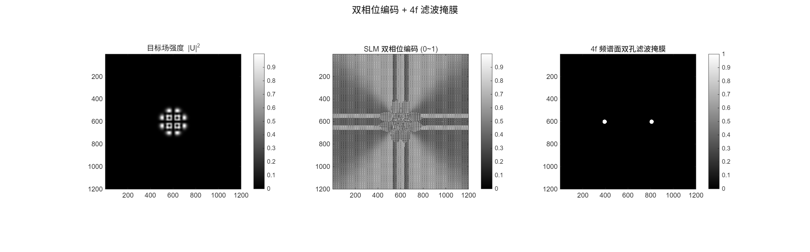
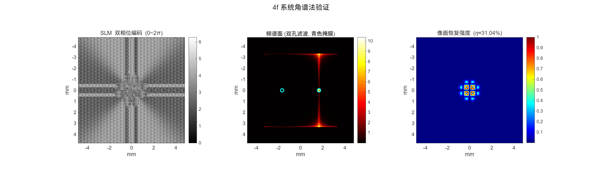

复现 Mendoza-Yero 等（Optics Letters, 2014）的双相位编码方法： 把复振幅目标场 U = A·exp(iφ) 拆成两个纯相位项， 经棋盘格交替排列 + 线性载频光栅写入 SLM， 再用 4f 系统双孔滤波恢复原始复振幅。 目标场为螺旋厄米-高斯 HG(5,1) + i·HG(1,5)，携带轨道角动量。
一句话：把复振幅拆成两个纯相位项的和，棋盘格交替排列，再用 4f 滤波分离衍射级。
纯相位空间光调制器（SLM）只能调制入射光的相位，不能直接调制振幅。 但很多光场（如涡旋光束、矢量光束）需要同时控制振幅和相位。 双相位编码（double-phase encoding, DPH）用一个巧妙的数学恒等式突破这个限制。
任意复振幅 U = A·exp(iφ) 可以写成两个纯相位项之和： U = ½[exp(iθ₁) + exp(iθ₂)]，其中 θ₁ = φ + acos(A)，θ₂ = φ − acos(A)。 把 θ₁、θ₂ 在棋盘格上交替排列，再叠加线性载频光栅， 则 +1 / −1 衍射级分别携带两个相位项，在远场相干叠加恢复 U。
SLM 后的第一个透镜做傅里叶变换，频谱面上放置双孔光阑， 只让 +1 和 −1 级通过，挡住 0 级和高级衍射。 第二个透镜再做一次傅里叶变换，在像面恢复复振幅 U。
棋盘格双相位 + 载频
4f 频谱面双孔光阑
像面复振幅 U
Mendoza-Yero et al., Optics Letters 39(7), 1740 (2014) 的实现参数。
| 参数 | 取值 | 含义 |
|---|---|---|
| N | 1200 | SLM / 网格分辨率 |
| λ | 532 nm | 波长 |
| dx | 8 µm | SLM 像素间距 |
| f | 100 mm | 4f 系统焦距 |
| w₀ | 0.4 mm | HG 光束束腰 |
| P_carrier | 4 px | 载频光栅周期 |
| r_mask | 0.15 mm | 滤波孔径半径 |
| 环节 | 操作 |
|---|---|
| 目标场 | U = HG(5,1) + i·HG(1,5)（螺旋厄米-高斯，带 OAM） |
| 编码 | θ₁ = φ+acos(A), θ₂ = φ−acos(A)，棋盘格交替 + 载频 |
| 滤波 | 频谱面双孔光阑，选 +1/−1 级 |
| 验证 | 角谱法（ASM）完整 4f 传播 + FFT 远场校验 |
双相位编码 SLM 相位图、4f 频谱双孔滤波、像面涡旋阵列强度恢复。


validation.m 输出编码 SLM 相位、频谱面（双孔滤波叠加）、像面恢复强度三幅图， 并报告滤波效率 η。farfield.m 做直接 FFT 远场一致性校验。
三个脚本依次完成编码、远场校验、4f 系统验证。
generate_phase.m 构建目标场 U = HG(5,1) + i·HG(1,5)， 按 θ₁ = φ+acos(A)、θ₂ = φ−acos(A) 编码，棋盘格交替排列并叠加载频光栅， 输出 phase_slm.mat（0–2π 相位）和 filter_mask.mat（双孔光阑）。
farfield.m 对编码相位做直接 FFT 远场计算，检查 +1/−1 衍射级是否 正确分离、载频位置是否与预期一致。
validation.m 用角谱传播法（ASM）模拟完整 4f 系统： SLM → 透镜 1（傅里叶变换）→ 双孔滤波 → 透镜 2（傅里叶变换）→ 像面， 验证恢复强度并输出滤波效率 η。
| 项目 | Hsueh & Sawchuk 1978 | 本复现（Mendoza-Yero 2014） | 影响 |
|---|---|---|---|
| 编码方式 | 双相位全息 | 棋盘格 + 载频 | 分离衍射级更干净 |
| 滤波 | 光阑 | 4f 双孔光阑 | 仅通过 ±1 级 |
| 目标场 | 通用 | HHG OAM 阵列 | 验证复振幅恢复 |
| 验证 | 实验 | ASM 数值仿真 | 完整 4f 链路 |
MATLAB R2022a+，无需工具箱，三条脚本。
addpath('functions');
% 1. 双相位编码 + 滤波掩膜
generate_phase % 生成 phase_slm.mat, filter_mask.mat
% 2. 远场一致性校验
farfield
% 3. 完整 4f 系统 ASM 验证
validation
@article{mendozayero2014encoding,
title = {Encoding complex fields by using a phase-only
optical element},
author = {Mendoza-Yero, O. and M{\'i}nguez-Vega, G.
and Lancis, J.},
journal = {Optics Letters},
volume = {39},
number = {7},
pages = {1740--1743},
year = {2014},
doi = {10.1364/OL.39.001740}
}
@article{hsueh1978computer,
title = {Computer-generated double-phase holograms},
author = {Hsueh, C. K. and Sawchuk, A. A.},
journal = {Applied Optics},
volume = {17},
number = {24},
pages = {3874--3883},
year = {1978}
}
本复现为独立实现。双相位编码方法源自 Hsueh & Sawchuk (1978)， 棋盘格 + 4f 滤波实现参考 Mendoza-Yero et al. (Optics Letters, 2014)。 螺旋厄米-高斯光束与 OAM 阵列见 López-Mariscal & Gutiérrez-Vega (2007)。 代码仅用于学术研究与学习交流。